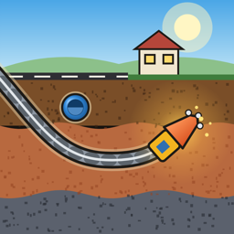

NoDig
NoDig is a one-finger drilling game for iPhone. Steer a horizontal drill under roads, rivers, railways and runways, avoid water, sewer, fiber, power and gas lines, and keep your bentonite tank full.
Support
Contact: Nick.bjork@hotmail.com
Please include your iPhone model and what happened. We usually reply within a few days.
Common questions
I bought Remove ads or the Starter pack and reinstalled the game.
Open Settings in the game and tap Restore purchases. Purchases are tied to your Apple ID.
My coins are gone after reinstalling.
Game progress is saved only on your device. Deleting the app deletes your progress. Coin packs are consumed when bought and can't be restored.
A purchase went wrong.
Payments are handled by Apple. You can ask for a refund at reportaproblem.apple.com.
There is no sound.
Turn off silent mode on your iPhone and check that Sound is on in the game's Settings.
Privacy
Read the privacy policy.